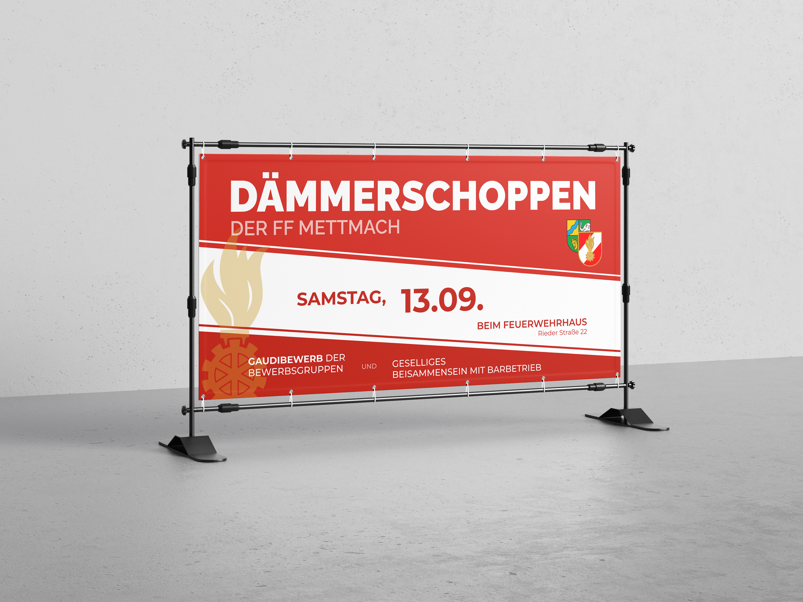

FF Mettmach Visual Identity
Long-term creative direction and media management for the local volunteer fire department — uniting annual event identity systems, large-scale print banners, social media curation, and active deployment photography.

Event Identity & Large-Scale Print
A central focus is shaping a recognizable visual language for traditional recurring events. For the annual Frühschoppen, I developed a distinct, modular design system applied across flyers, tickets, and massive site-fence mesh banners displayed at the station. This visual consistency extends to community events such as the Dämmerschoppen, the youth group's Planenrutschen, and the annual Silvesterglühweinstand.
Social Media & Emergency Photography
Managing both Instagram and Facebook channels involves end-to-end editorial planning: concepting posts, writing authentic captions, and publishing real-time updates. Being an active brigade member enables authentic, high-stakes photography directly during training drills and emergency response operations, highlighting modern volunteer fire work with respect and emotional resonance.


